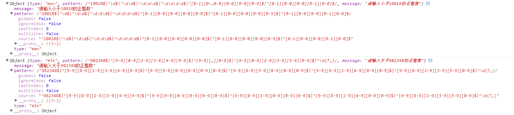

起因
嗯~o(￣▽￣)o，项目是个基础框架，为了达到字段的动态配置。然后就有了这个 动态生成数字正则表达式的需求，老大还不忘对我说了句：“小伙子，看好你哦。”。嗯，好像就是这样！
如果静态的生成的数字范围的话，还是很简单的。但动态的第一次见，嗯，沉浸在挑战的亢奋中~！
分析
如果是范围的话，那就有最小和最大的,先从最大的入手。
1，动态生成正则的方法只有一种，使用new RegExp(string)的方法把string类型转换成regexp。
2，正则是匹配到每一个数字的，所以需要确定范围，比如100的范围有
\d \d\d 100 三种,123 有 \d \d\d 1[0-1][0-9] 1[0-2][0-3] 依次类推。需要生成的范围就容易确认。
3，通过遍历输入的数字长度和每个值来生成相应的字符串，最终拼接成完整的字符串，通过new RegExp来生成最终的正则。
生成的最大值动态正则
function ruleMax(max, errorMessage) {
if (!Number(max)) return;
if (Number(max) < 0) return;
let a = max + ''
let aStr = '\^' + a;
let b = []
let d = []
let middlePat = []
let finallyArr = []
let finallyReg = ''
let patMaxO = ''
let midS;
let reMax = {}
for (let i = 0, len = a.length; i < len; i++) {
if (i > 0) {
patMaxO += '|\^'
for (let j = 0; j < i; j++) {
patMaxO += '\\d'
}
patMaxO += '\$'
}
b.push('[0-' + a[i] + ']')
}
for (let n = 0, len = b.length; n < len; n++) {
middlePat = []
// 当为1的时候不能取 1 取0
// 当为0的时候也需要过滤掉
// 当大于1时，需要减1，尾数全可以匹配0-9
if(b[n].substr(3,1) == 1) {
middlePat.push('[0-0]')
}else if(b[n].substr(3,1) == 0) {
middlePat.push('[0-0]')
}else {
middlePat.push('[0-' + (a[n]-1) + ']')
}
for (let m = 0, leng = b.length; m < leng; m++) {
if (m > n && b[n].substr(3,1) !== '0') {
middlePat.push('[0-9]')
}else if(m > n && b[n].substr(3,1) === '0') {
middlePat.push('[0-0]')
}
}
d.push(middlePat)
}
d.map(item => {
if (item.length < b.length) {
let discrepancy = b.length - item.length
let AA = b.slice(0, discrepancy)
item = AA.concat(item)
finallyArr.push(item)
}
return true
})
// 去重
let resetArr = []
finallyArr.map(item => {
resetArr.push(item.join(''))
})
let finPat = new Set(resetArr)
finPat.forEach((item) => {
finallyReg += '\^' + item + '\$|'
})
aStr += '\$' + patMaxO + '\|' + finallyReg.slice(0, finallyReg.length - 1)
const finMaxPat = new RegExp(aStr)
reMax.type = 'max'
reMax.pattern = finMaxPat
reMax.message = errorMessage ? errorMessage : '请输入小于' + max + '的正整数';
return reMax;
}
这个是出版的生成最大值的正则，其中主要的问题是边界问题。
1.当生成最大正则时需要考虑0和1的情况，需要特殊处理。
2.当生成最小正则时，需要考虑9的情况。
生成最小值的正则
function ruleMin(min, errorMessage) {
if (!Number(min)) return;
if (Number(min) < 0) return;
let patMin = min + ''
patMin = patMin.replace(/\b(0+)/gi,"")
let patMinStr = '\^' + patMin
const patMinLength = patMin.length
let reMin = {}
let regArr = []
let patStr = []
let f = []
let finallyMinArr = []
let maxS;
let finallyMinReg = ''
for (let j = 0; j < patMinLength; j++) {
patStr = []
if(Number(patMin[j]) === 9) {
patStr.push('[9-9]')
}else {
patStr.push('[' + (Number(patMin[j]) + 1) + '-9]')
for (let k = 0; k < patMinLength; k++) {
if (k <= j) {
continue;
} else {
patStr.push('[0-9]')
}
}
}
f.push('[' + patMin[j] + '-9]')
regArr.push(patStr)
}
regArr.map(item => {
if (item.length < patMinLength) {
let minDiscrepancy = patMinLength - item.length
let addNum = f.slice(0, minDiscrepancy)
item = addNum.concat(item)
finallyMinArr.push(item)
} else {
finallyMinArr.push(item)
}
return true
})
let resetArr = []
finallyMinArr.map(item => {
resetArr.push(item.join(''))
})
let finPat = new Set(resetArr)
finPat.forEach((item) => {
finallyMinReg += '\^' + item + '\$|'
})
patMinStr += '\$|' + finallyMinReg + '\^\\d{' + (patMinLength + 1) + ',}'
const finMinPat = new RegExp(patMinStr)
reMin.type = 'min'
reMin.pattern = finMinPat
reMin.message = errorMessage ? errorMessage : '请输入大于' + min + '的正整数'
return reMin
}
最终输出的内容

总结
嗯，多想想，明确好，规划好再写就OK啦。